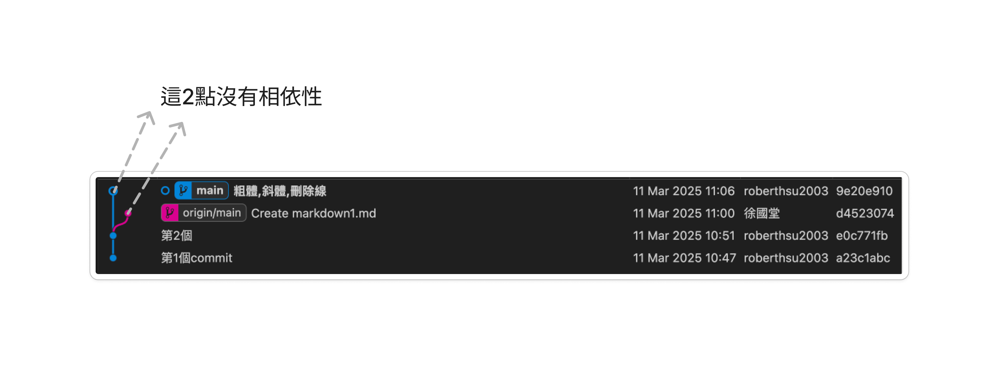
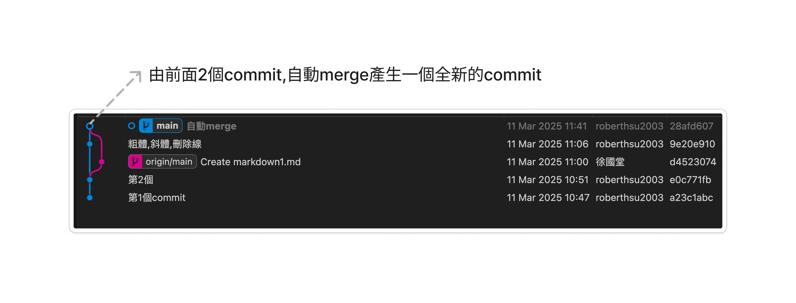
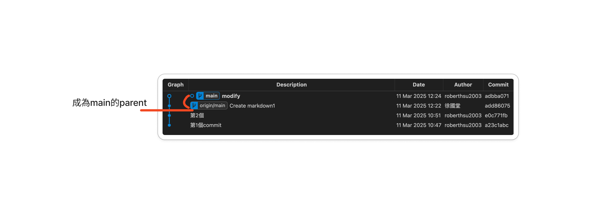
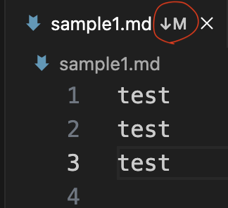
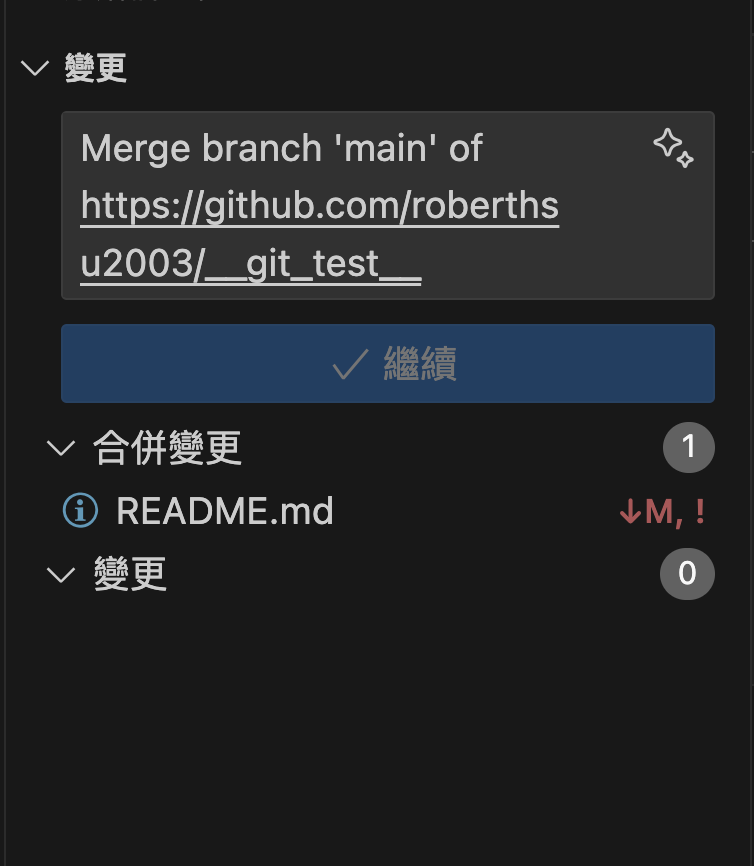
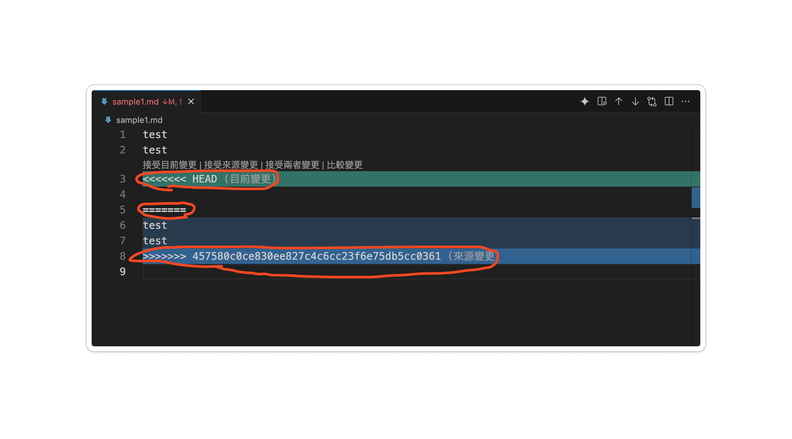
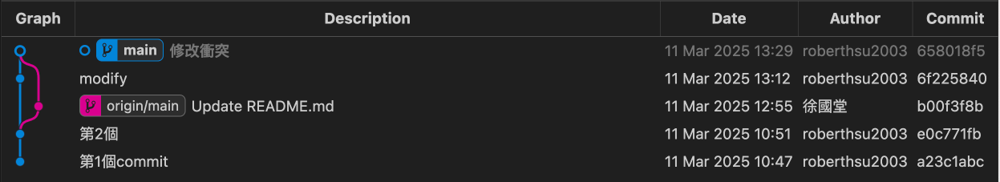

整合github常遇的錯誤訊息
狀況1 push(推送)時出現的錯誤訊息
- 問題是因為遠端 main 分支有新的提交，而你的本地 main 分支落後於遠端版本，導致 Git 拒絕推送 (non-fast-forward error)。
- 因為在github上不會自動merge
操作與輸出
roberthsu2003@xuguotangdeMBP test % git push
To https://github.com/roberthsu2003/__git_test__.git
! [rejected] main -> main (non-fast-forward)
error: failed to push some refs to 'https://github.com/roberthsu2003/__git_test__.git'
hint: Updates were rejected because the tip of your current branch is behind
hint: its remote counterpart. If you want to integrate the remote changes,
hint: use 'git pull' before pushing again.
hint: See the 'Note about fast-forwards' in 'git push --help' for details.- 依command觀察
[!TIP]
→ 使用fetch命令取得remote分支的資訊
bash
git fetch origin && git status- 依圖型觀察:main和origin/main分叉

解決方法1
[!TIP]
→ 使用命令pull
> 注意預設會在local自動merge,所以會要求您提供merge的敘述文字\
> 預設敘述文字的#是註解,被排除為敘述文字
bash
git pull #先pull,要寫敘文字
git push #再push #多了一個merge的commit
解決方法2
- rebase (下拉下來的commit,成為本地端commit的parent)
bash
git pull --rebase origin main
[!WARNING]
→ 如果rebase 過程中遇到衝突，Git 會停止並讓你手動解決。
1️⃣有衝突的檔案，解決衝突後，執行：
base
git add <修正過的檔案>
git rebase --continue2️⃣如果想要放棄 rebase，可以執行：
bash
git rebase --abort狀況2 push時本地端和遠端出現檔案衝突
[!TIP]
透過vscode可以快速發現
> 2種方式
第1種方式-正在編輯時發現

→解決方法:
- 回復至未編輯的狀態(discard changes in working directory)\
- 再git pull
bash
git restore <檔案名稱> #回復衝突檔案
git pull #檔案沒衝突後,將雲端提取下來第2種方式-在原始檔控制內發現
- 本地端還沒有建立commit時,在vscode就可以知道檔案是否衝突

→解決方法2:
- 回復至未編輯的狀態(discard changes in working directory)\
- 再git pull
bash
git restore <檔案名稱> #回復衝突檔案
git pull #檔案沒衝突後,將雲端提取下來狀況3 pull(提取)出現檔案衝突
- 由於有分叉,所以先pull下來

檔案衝突的訊息
- 會告知您那一個檔案衝突
bash
roberthsu2003@xuguotangdeMBP test % git pull
Auto-merging README.md
CONFLICT (content): Merge conflict in README.md
Automatic merge failed; fix conflicts and then commit the result.- vscode衝突的畫面

解法方法1-修改衝突
修改衝突檔案使用vscode
- 1️⃣可以在編輯器4個選擇其中1個

- 2️⃣自已手動修改
- 刪除衝突部分

- 建立新的commit
bash
git add .
git commit -m "修改衝突和合併變更"
解決方法2-取消pull
1.取消pull的動作
當 git pull 遇到衝突時，Git 其實是在執行 git fetch + git merge，如果你想取消這個合併，可以執行：
bash
git merge --abort這將會 取消merge，並讓你的分支回到 git pull 之前的狀態。
2.回復至前一個commit,放棄本次修改
bash
git reset --hard HEAD^3.重新pull
bash
git pull狀況4 pull成功完成後撤銷前一次的pull
解決方法
如果 git pull 已經成功執行（即 merge 也完成了），但你想回到 pull 之前的狀態，你可以使用：
bash
git reset --hard ORIG_HEAD